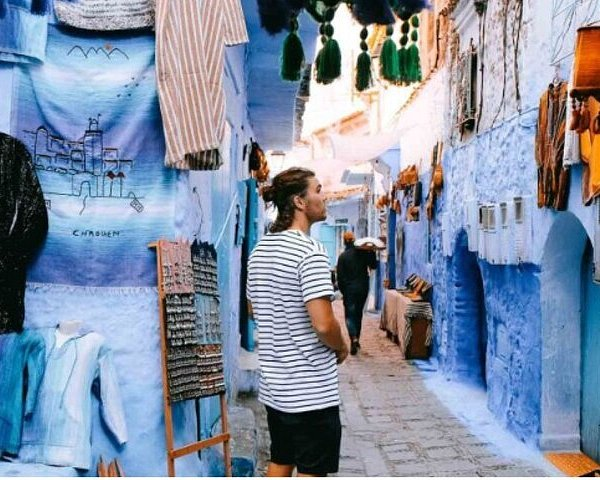
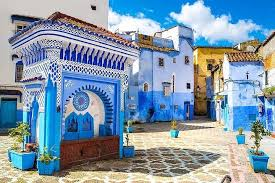
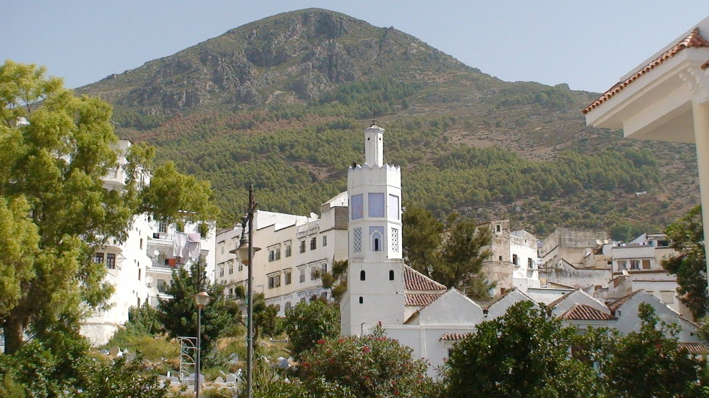

Excursion d'une journée à Chefchaouen
Découverte de la médina de Chefchaouen, de ses ruelles bleues.
10h30min
4.9(12,103)

Excursion guidée d'une journée :
Ait Benhaddou Kasbah
la Kasbah séduit par son atmosphère paisible,son jardin verdoyant et son architecturetraditionnelle qui invite à la découverte .
11h30min
5.8(5489)

Découverte de la place
Outa El Hammam.
une expérience authentique de détente dans un cadre traditionnel, apprécié pour son ambiance chaleureuse et son moment de bien-être local.
5h40min
4.6(046)